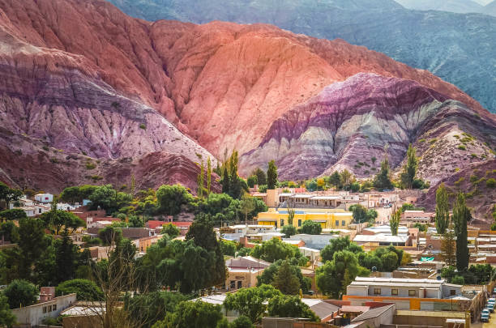
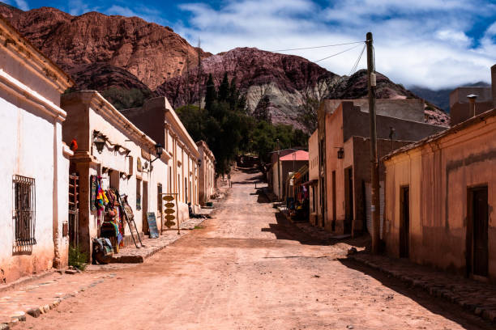

Purmamarca
El encanto del Cerro de los 7 Colores y su mercado artesanal.

El encanto del Cerro de los 7 Colores y su mercado artesanal.

Un inmenso mar de sal bajo el cielo más puro.

Cultura, tradición viva y la imponente fortaleza del Pucará.
Viajeros que vivieron la experiencia
"La inmensidad de las Salinas Grandes te deja sin palabras. Los colores del atardecer son irreales."
"La energía que se siente al caminar por Purmamarca de noche es única. Excelente organización."
"Conocer el Pucará en Tilcara fue un viaje en el tiempo. Totalmente recomendado para desconectar."
"Los paisajes de la Quebrada contrastando con el cielo azul marino... una belleza total."
"La gastronomía jujeña es un viaje de ida. Probar las empanadas y la humita en chala en Humahuaca fue la gloria."
"Hacer el recorrido por la Ruta 9 parando en cada pueblito es la mejor decisión que pudimos tomar. Un ambiente verdaderamente mágico."
"La calidez de la gente en la capital te hace sentir como en casa desde el primer minuto. Excelente infraestructura turística, ¡volveremos!"